和ψ暂时还是未知函数。
和ψ暂时还是未知函数。2．波动方程
虽然特殊的偏微分方程早在1734年就出现在欧拉的著作(1)中，并于1743年出现在达朗贝尔的《论动力学》（Traité de dynamique）中，但其中并无值得注意的东西。关于偏微分方程的第一次真正的成功来自对以小提琴弦为典型的弦振动问题的重新进攻。为使偏微分方程易于处理，加上了振动很小的近似。达朗贝尔（1717—1783）在1746年的论文(2)《张紧的弦振动时形成的曲线的研究》（Researches on the Curve Formed by a Stretched String Set into Vibrations）中说，他提议证明无穷多种与正弦曲线不同的曲线是振动的模式。
我们也许记得在上一章中首次接触弦振动时，弦被当成“小珠的弦”，即弦被看成由n个离散的、相等的和等间隔的、彼此间用没有重量的柔软的弹性绳相连接的重物构成。为了处理连续的弦，重物的数目允许变成无穷多个，同时每一个的大小和质量都减小，使得当“珠子”个数增加时总质量趋近连续弦的质量。在取极限时存在着数学上的困难，不过这种细微的地方被忽视了。
约翰·伯努利在1727年（第21章第4节）处理了离散质量的情况。如果弦的长度是l，位于0≤x≤l，又如果第k个质量的横坐标是
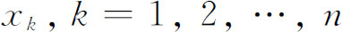
（在x＝l处的第n个质量是不动的），那么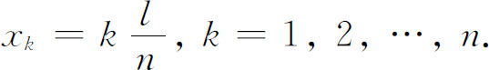
通过分析第k个质量上的力，约翰·伯努利已经证明，如果yk是第k个质量的位移，则
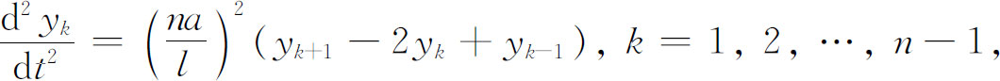
其中
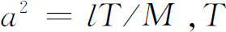
是弦中的张力（弦振动时它被当作常数），M是总质量。达朗贝尔用y（t，x）代替yk，用Δx代替l/n。于是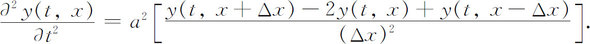
然后他注意到当n变成无穷时Δx趋于0，方括号内的表达式就变成
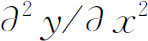
。因此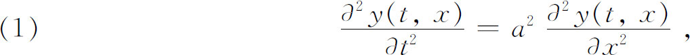
其中
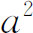
现在是T/σ，σ是单位长度的质量。这样一来，现在称为一维的波动方程就第一次出现了。因为弦固定在端点x＝0和x＝l，所以解必须满足边界条件
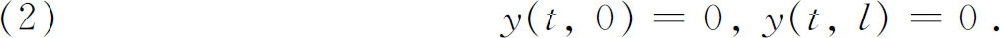
当t＝0时，弦被拉到某形状
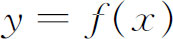
然后放开，这意味着每一质点出发时初速为0。这些初始条件在数学上被表示为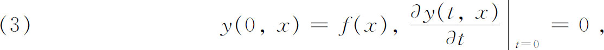
它们也必须被解所满足。
这个问题被达朗贝尔以现代教科书中还经常引用的非常巧妙的方法解出来了。为了节省篇幅，我们将不引全部细节。他首先证明
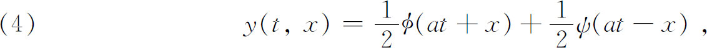
其中和ψ暂时还是未知函数。
至此达朗贝尔已推出偏微分方程（1）的每个解都是（at＋x）的函数与（at-x）的函数之和。将（4）直接代入（1），容易证明逆命题成立。当然达朗贝尔还必须满足边界条件和初始条件。把条件y（t，0）＝0用于（4），对一切t有
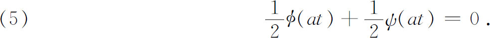
因为对任一
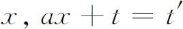
总对某一t′成立，我们可以说对任何x及t都有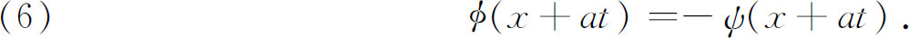
从（4）看出条件y（t，l）＝0变成
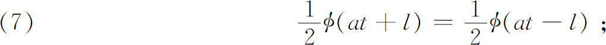
而由于上式对t恒等，这就证实了 一定是关于at＋x的以2l为周期的周期函数。
一定是关于at＋x的以2l为周期的周期函数。
由（4）及，条件
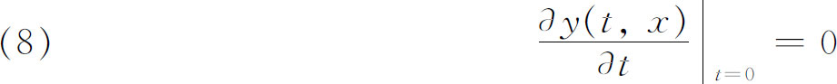
产生出
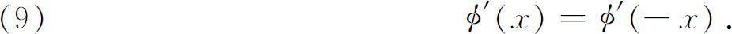
积分后变成
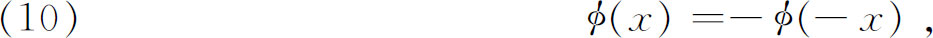
所以 是x的奇函数。如果现在在（4）中用
是x的奇函数。如果现在在（4）中用
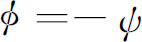
确定出y（0，x），并且用（10），我们就有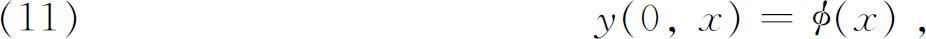
而因初始条件是y（0，x）＝f（x），我们便有
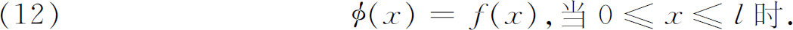
总结起来就有
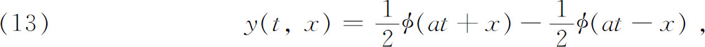
其中 适合上述周期性和奇性的条件。此外，如果初始状态是
适合上述周期性和奇性的条件。此外，如果初始状态是
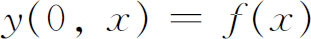
，则（12）必然在0到l之间成立。这样，对给定的f（x）应该恰有一个解。达朗贝尔当时认为函数是由代数和微积分的步骤构成的解析表达式。因此，如果两个这样的函数在x的一个区间上相等，它们必然对一切x相等。因为在0≤x≤l上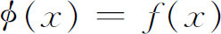
，而 又具有奇性和周期性，所以f（x）必定适合同一组条件。最后，因为y（t，x）要满足微分方程，它必须是二次可微。但
又具有奇性和周期性，所以f（x）必定适合同一组条件。最后，因为y（t，x）要满足微分方程，它必须是二次可微。但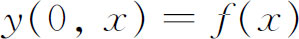
，所以f（x）也必须是二次可微的。在看到达朗贝尔1746年论文的几个月内，欧拉写了他自己的论文《论弦的振动》（On the Vibration of Strings），提出于1748年5月16日(3)。虽然在解法上他沿用了达朗贝尔的方法，但这时，在允许什么函数可以作为初始曲线，因而也可以作为偏微分方程的解上，欧拉却有着全然不同的想法。甚至在讨论弦振动问题之前，事实上在1734年的一个工作中，他就允许了由不同的熟知曲线的部分所构成的，甚至是随手画出的曲线所构成的函数。例如（图22.1），在区间（a，c）中由抛物线的弧，在区间（c，b）中由三次曲线的弧组成的曲线在这种概念下构成了一条曲线或一个函数。欧拉称这样的曲线是不连续的，虽然按照现代术语，它们是有间断的导数的连续函数。他在1748年的教科书《引论》中，还在坚持18世纪的标准概念：函数必须用单一的解析表达式给出。可是，看来弦振动问题的物理学是促使他把他的函数新概念公开出来的使人非相信不可的理由。他接受了在-l≤x≤l中用公式
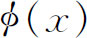
定义的任何函数，并认为在（-l，l）外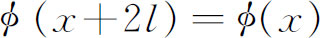
就是曲线的定义。在后来的一篇论文(4)中，他走得更远了，他说对任意的 和ψ，
和ψ，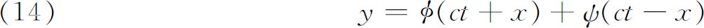
都是方程
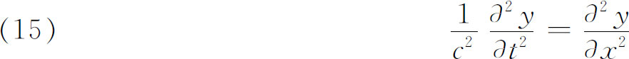
的解。这可由代入微分方程推得。但是，无论初始曲线是由某一方程表示的，还是它是用不能以一个方程表示的任一方式描绘出来的，都同样是符合要求的。只有初始曲线在0≤x＜l内的部分才与弦振动有关系。这部分之外的延伸无需考虑。所以，该曲线的不同部分并不按任一种连续性法则（单个的解析表达式）彼此连接，它们只被说成是连在一起的。由于这个原因，整条曲线不可能包含在一个方程内，除非曲线碰巧是某个正弦函数。
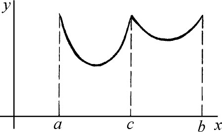
图22.1
1755年欧拉给函数下了一个新定义：“如果某些量这样地依赖于另一些量：当后者变化时前者经受变化，就称前者为后者的函数。”在另一篇文章(5)中他又说：“不连续”函数的各部分彼此不属于对方，在函数的整个范围中也不能用一个方程来确定。此外，在0≤x≤l内给定初始形状后，在-l≤x≤0中用反序重复它（使它是奇的），并且设想在每一长为2l的区间内不断重复这段曲线直到无穷远。那么如果该曲线
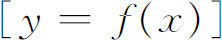
被用来表示初值函数，经过时间t后，对应于振动的弦上横坐标x的纵坐标将是（参阅公式［13］和［12］）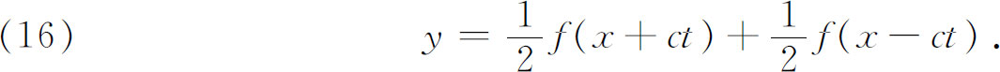
欧拉在他的1749年的基本论文中指出：振动弦的一切可能的运动，无论弦的形状怎样，关于时间都是周期的，也就是说，该周期（通常）是我们现在所谓的基本周期。他也认识到周期为基本周期的一半、三分之一等的单个的模式能够作为振动的图像出现。他给出这样的特解为
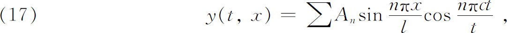
如果初始形状是
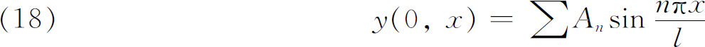
的话。但是，他没有说明是对有限多个项还是对无穷多个项求和。然而他还是有了模式的叠加的思想。所以，欧拉与达朗贝尔的主要分歧点是，他允许一切种类的初始曲线，因此，也就允许非解析解，而达朗贝尔只接受解析的初始曲线和解析解。
欧拉在引进他的“不连续”函数时，他意识到了他已经向前迈进了一大步。1763年12月20日他写信给达朗贝尔说：“考虑这类不服从连续性［解析性］法则的函数，为我们开辟了一个全新的分析领域。”(6)
丹尼尔·伯努利以全然不同的形式给出弦振动问题的解，这个工作激起了另一场关于可允许的解的争论。丹尼尔·伯努利（1700—1782）是约翰·伯努利的儿子，1725年到1733年是圣彼得堡的数学教授，后来在巴塞尔又相继是医学、形而上学和自然哲学的教授。他主要工作是在流体动力学和弹性力学方面。在前一领域，他关于潮汐流动的一篇论文赢得了奖金；他还打算把流体流动的理论应用到人类血管的血液流动上。他是一个熟练的实验家并通过实验在1760年前发现了静电荷的引力定律。这个定律通常被归于库仑（Charles Coulomb）。丹尼尔·伯努利的《流体动力学》（Hydrodynamica，1738）是这个领域的第一本主要的教科书，书中包括曾在许多研究论文中出现过的课题。其中一章是热的力学理论（反对热是一种物质），并给出了气体理论中的许多结果。
在前一章引用过的1732年或1733年的论文中，丹尼尔·伯努利明确地说明振动的弦能有较高的振动模式。在后来一篇关于有载荷的垂直柔软弦上重物的合成振荡的论文(7)中，他作了如下的说明：
类似地，绷紧的乐器弦能够以很多方式，甚至按理论上讲能以无穷多种方式发生等时振动……此外，在每一种模式中它发生较高的或较低的音调。当弦振动产生一个单拱的时候发生了第一个和最自然的模式，于是弦产生最慢的振动，发出它的所有可能的音调中的最低音，对于其他一切音来说这是基音。下一个模式要求弦产生两个拱，位于（弦的静止位置的）两边，于是振动加快一倍，这时弦发出基音的高八度音。
然后他描述了更高的模式。但是，他没有给出数学的说明，不过，他有数学的思想好像是明显的。
在一篇关于杆的振动以及振动杆发出的声音的论文(8)中，丹尼尔·伯努利不仅给出杆振动的各个模式，而且还明确地说明两类声音（基音和高次谐音）能够同时存在。这是小谐振共存的第一次陈述。丹尼尔·伯努利基于对杆及声音怎样能发生作用的物理的理解，而不是从数学上证明两个模式的和是一个解。
当他见到达朗贝尔1746年的第一篇论文和欧拉1749年关于弦振动的文章后，他赶忙发表了他已有了多年的想法(9)。在任性地挖苦达朗贝尔和欧拉工作的抽象性之后，他再次断言振动弦的许多模式能够同时存在（于是这条弦响应所有这些模式的和或叠加），并且声称这就是欧拉和达朗贝尔所说明的全部内容。随后说到一个要点：他坚持全体可能的初始曲线可表示成
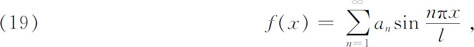
因为有足够的常数an使级数适合任一曲线。所以，他断定全体后继运动应是
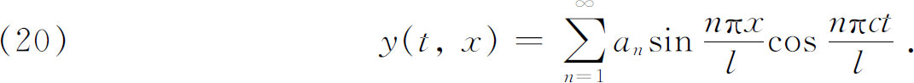
这样一来，每一个对应于任一初始曲线的运动不外乎是正弦周期模式的和，并且这一组合有着基音的频率。然而，他未给出数学论据以支持他的论点；他依靠物理。在1753年的文章中丹尼尔·伯努利说：
我的结论是：一切能发声的物体都含有对应于无穷多种规则振动的无穷多种声音……但是，这许多声音并不是达朗贝尔先生和欧拉先生所说的……每一种类型［由某初始曲线产生的每一基本模式］乘以无穷多个倍数在每一区间上与无穷多条曲线相一致，使得每一点发生这些振动的在同一瞬间也获得这些振动，而按照泰勒先生的理论，两节点间的每一区间内所应取得的形状都是极度拉长的相似旋轮线［正弦函数］。
那么我们要指出，弦AB不可能产生仅仅与第一图像［基音］或第二［第二谐音］或第三等直到无穷的谐音相一致的振动，但它能够产生在一切可能组合中的这些振动的一个组合，而且达朗贝尔和欧拉给出的一切新曲线都不过是泰勒振动的组合而已。
在这最后一段话里丹尼尔·伯努利把泰勒从未展示过的知识归到泰勒身上了。然而，撇开这一点，丹尼尔·伯努利的论点是极为重要的。
欧拉马上反对丹尼尔·伯努利的后一断言。事实上，欧拉1753年提交给柏林科学院（上面已经引用过）的文章就是部分地对丹尼尔·伯努利两篇文章的一个回答。欧拉强调了波动方程作为处理弦振动问题的出发点的重要性，他赞赏丹尼尔·伯努利关于许多模式能够同时存在使得在一个运动中弦能发出许多谐音的认识，但是，跟达朗贝尔一样，他否认所有可能的运动能用（20）表示出。他承认形如
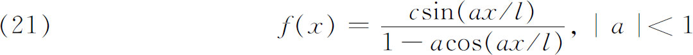
的初始曲线能用形如（19）的一个级数来表示。如果每一个函数能被表示成无穷三角级数，那么丹尼尔·伯努利的论点就会得到证实，但是欧拉认为这是不可能的。他说，正弦函数的和总是一个奇的周期函数，但是在他的解（见［16］）
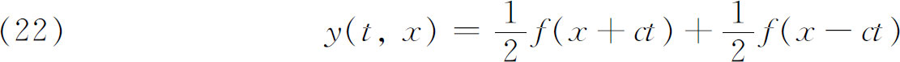
里，f是任意的（在欧拉的意义下是不连续的），因而肯定是不能被表示成正弦函数的和的。他说，实际上，f能够是伸展到无穷远的x范围的弧的组合，并且是奇的和周期的；还因为它是不连续的（在欧拉的意义下），所以它不能表作正弦曲线的和。他断言他自己的解无论从哪方面来看都没有限制。实际上，初始曲线不需要能用一个方程（单独一个解析表达式）表示出来。
正是在这种情况下，欧拉也针对麦克劳林级数说，这是不能表示任何一个任意函数的，所以无穷正弦级数也不可能这样。他所承认的一切就是丹尼尔·伯努利的三角级数表示特解，而他（欧拉）本人确实在他自己的1749年的文章中就已经得到过这样的解（见公式［17］和［18］）。
达朗贝尔在《百科全书》第7卷（1757）他写的关于“基音”的条目中也抨击丹尼尔·伯努利。他不相信一切奇的周期函数能表示成形如（19）的级数，因为这个级数是二次可微的，而全体奇的周期函数并不需要是这样。然而即使当初始曲线是足够多次可微的时候——并且达朗贝尔在他的1746年的文章中确实要求了它是二次可微的——它也并不需要能表示成丹尼尔·伯努利的形式。基于同样的理由，达朗贝尔也反对欧拉的不连续曲线。实际上，达朗贝尔要求初始曲线y=f（x）必须二次可微是正确的，因为从在x的某一个或几个值上没有二阶导数的f（x）得出的解，在这些奇点处必须满足一些特殊的条件。
丹尼尔·伯努利没有从他的看法后退。他在1758年的一封信(10)中照旧说，他有无穷多个系数an可供处置，从而适当地选择它们就能使级数（19）与任何函数f（x）在无穷多个点上相一致。在任何情况下他坚持（20）是最一般的解。达朗贝尔、欧拉和丹尼尔·伯努利间的辩论持续近十年之久而未获一致。问题的实质在于能够用正弦级数，或更一般地，用傅里叶级数表示的函数类的宽窄。
1759年，年轻尚不知名的拉格朗日参加了争论。在他论述声音的性质与传播的论文(11)中，他给出了这个课题的一些成果，然后把他的方法用到弦振动上。他进行得好像他抓住了一个新问题，而只不过重复了欧拉和丹尼尔·伯努利在前面已经做过的很多工作。拉格朗日也是从负载着有限个相等的、等间隔的质量的弦出发，然后过渡到无穷多个质量的极限。虽然他批评欧拉的方法要把结果限制为连续（解析）曲线，但拉格朗日说他将证明欧拉的结论——任一初始曲线能够合用——是正确的。我们将立即说到拉格朗日对连续弦的结论。他已得到
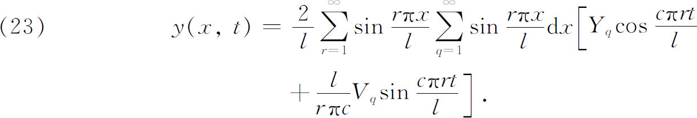
这里 和
和 是第q个质量的初位移和初速度。然后他用Y（x）和V（x）分别代替
是第q个质量的初位移和初速度。然后他用Y（x）和V（x）分别代替
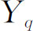
和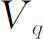
。拉格朗日把量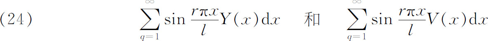
看作是积分，并且他把积分运算取在和号
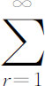
之外。由这些步骤得到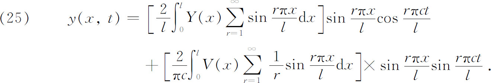
这里和号和积分号的交换不仅引导出发散级数，而且毁掉了拉格朗日有可能认出
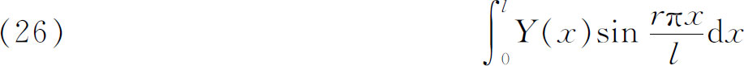
是傅里叶系数的任何一点机会。经过其他冗长的、困难而又可疑的步骤之后，拉格朗日得到了欧拉和达朗贝尔的结果
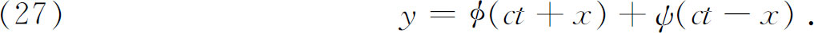
他断定上述推导使得这位伟大的几何学家（欧拉）的理论
毫无疑问是建立在直接而清楚的原理之上的，这些原理决不依靠达朗贝尔先生所要求的连续性［解析性］法则。此外，这就是怎么会发生以下情况的原因：当物体数目……有限时，曾经支持和证明了丹尼尔·伯努利先生关于等时振动的复合的理论的同一个公式，当物体数目变成无穷多时……却向我们表明了它是不充分的。事实上，从一种情况过渡到另一种情况下这一公式经历的变化是，使得那些组成整个系统的绝对运动的简单运动大部分互相抵消了，而留下的那些简单运动又被歪曲和改变得完全不可认识了。令人气恼的是这样巧妙的理论在主要情况下竟被证实是谬误的，而所有出现在自然界中的小的相互运动可能都与这种情况互相关联。
几乎全是无意义的话。
拉格朗日在他的解无需对初始曲线Y（x）和初速度V（x）施加限制这一争论中，他的主要根据是他没有对它们进行微分，但是，如果人们要把他所作的推导严密化，施加限制就是必要的了。
欧拉和达朗贝尔批评拉格朗日的工作，但是实际上并未击中要害；他们却偏偏挑中了欧拉称之为“奇妙的计算”的细节。拉格朗日试图回答这些批评。双方的答辩和反驳太广泛了，不能在这里叙述，尽管有很多确实揭示了那时的思想。例如，拉格朗日当m＝∞时用
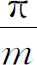
代替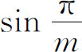
，并用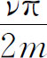
代替。达朗贝尔允许前一个但不允许后一个，因为所涉及的ν值与m是可比的。达朗贝尔还对形如的级数可能是发散的提出异议，而拉格朗日用作答复的是当时很普通的论点，即级数的值就是这级数所由之而来的函数的值。
虽然欧拉确实批评了拉格朗日的数学细节，但他在1759年10月23日的信(12)中对拉格朗日的文章作了全面的答复，他赞扬了拉格朗日的数学技巧，并且说这使得争论避免了任何诡辩，还说每个人现在必须认识到不规则的以及（按欧拉的意义下）不连续的函数在这类问题中的用处。
1759年10月2日，欧拉给拉格朗日写道：“我高兴地读到你赞成我的解……而达朗贝尔却百般挑剔试图暗中败坏它，唯一的原因在于他自己没能得到它。他曾吓唬说要发表一篇有分量的反驳；是否他真正这样做了我不知道。他想他能够用他的雄辩来欺骗半通者。我怀疑他是否严肃，要不也许他是完全被自私蒙住了眼睛。”(13)
在1760年或1761年拉格朗日试图回答达朗贝尔和丹尼尔·伯努利在信件来往中提出的批评，他给出了弦振动问题的一个不同的解(14)。这次他直接从波动方程（c＝1）出发，利用乘上一个未知函数以及另外的一些步骤把偏微分方程归结为解两个常微分方程。然后，又通过更多的不全是正确的步骤，拉格朗日得到解
这里f（x）＝y（0，x）和（当t＝0时）是给定的初始条件。如同拉格朗日所证明的，这与达朗贝尔的结果是一致的。但是后来没有引用他自己的工作，他试图使他的读者相信，他对初始曲线没有用到任何连续性（解析性）法则。确实地，他对初始函数没有使用任何直接的微分运算。但是，也就是在这篇文章中，为了严密地证明他的极限过程，就不能回避关于初始函数的连续性和可微性的假设。
激烈的争论贯穿了18世纪的整个60年代和70年代，甚至拉普拉斯也在1779年参加到这场吵闹中来了(15)，并且站在达朗贝尔一边。在1768年开始出现的题名为《短文集》（Opuscules）的小丛书中，达朗贝尔继续这场辩论。他反驳欧拉，理由是欧拉允许太一般的初始曲线，又反驳丹尼尔·伯努利，理由是他（达朗贝尔）的解不能表示成正弦曲线的和，因此丹尼尔·伯努利的解不够一般。三角函数的无穷级数可以被作得适合于任一初始曲线，因为它有无穷多个an可供确定，这种想法（丹尼尔·伯努利有这样的主张）被欧拉作为办不到的事情而拒不接受。他还提出这样的问题：当初始时刻只有弦的一部分被扰动时，一个三角级数怎样能表示这样的初始曲线。欧拉、达朗贝尔和拉格朗日始终否认三角级数能够表示任一解析函数，更不用说更加任意的函数了。
每个人提出的许多论据大体上是不正确的；而其结果，在18世纪内，也是没有说服力的。用三角级数来表示一个任意函数这一重要问题，直到傅里叶着手研究之前一直没有得到解决。欧拉、达朗贝尔和拉格朗日虽然到了发现傅里叶级数的意义的门槛边沿，但是却没有鉴别出摆在他们面前的是什么东西。用当时的知识来判断，所有这三个人和丹尼尔·伯努利在他们的主要的争论中都是正确的。达朗贝尔循着莱布尼茨时期建立的传统，坚持函数必须是解析的，因而认为任何在这种意义上不能解的问题就是不可解的。他在给出y（t，x）关于x必须是周期的论证方面也是正确的。但是，他没有认识到，在某区间上，例如说在0≤x≤l上，给定了一个任意的函数，那么就可以对整数n在每一区间内重复这个函数使它成为周期的。当然，这类周期函数有可能不能用一个（闭）公式来表示。欧拉和拉格朗日（至少在他们的时代）相信不是所有的“不连续”函数都能表示成傅里叶级数，这是合理的。然而也同样正确的是，他们相信（可是他们没有证明）初始曲线能够是非常一般的函数。它既不必是解析的，也不必是周期的。丹尼尔·伯努利确实在物理基础上采取了正确的立场，但他不能用数学来支持它。
在函数的三角级数表示问题上争论的一个非常奇怪的特点是，所有卷入的人都知道非周期函数（在一个区间内）能够被表示成三角级数。第20章（第5节）的引证就说明，克莱罗、欧拉、丹尼尔·伯努利和其他一些人实际上获得了这样的表达式，他们的很多文章也有求三角级数系数的公式。事实上所有这些工作在1759年都出版了，在这一年拉格朗日提出了他的关于振动弦的基本论文。所以他本来是可以推出任一函数都有三角展开式，并能够以确定的形式指出系数公式的，但是他没有能这样做，仅仅是在1773年，当激烈的争论已经过去，丹尼尔·伯努利确实才注意到一个三角级数的和在不同区间内可表示不同的代数表达式。为什么所有这些结果都没有影响关于弦振动的辩论呢？可以从几方面来解释。很多关于用三角级数表示非常一般的函数的结果是在天文学的论文中，因此丹尼尔·伯努利可能没有读到它们，以至不能指出它们来捍卫他的立场。欧拉和达朗贝尔他们必然是知道克莱罗1757年的工作的（第20章第5节），但是也许不喜欢研究它，因为该文驳斥了他们自己的论点。而且克莱罗所做的这个天文学上的工作很快就被废弃和忘却了。另一方面，尽管欧拉用了三角级数——如像在他的内插理论中——表示多项式表达式，但他并不接受十分任意的函数都能够这样表示的一般事实；当他用到这种级数表达式时，它们的存在性是用别的方法保证的。
另一个问题是，具有解析系数（例如常系数）的偏微分方程为什么能有非解析解，这个问题也没有真正弄清楚。在常微分方程的情形，如果系数解析，解必然也是解析的。但是对偏微分方程这就不对了。虽然欧拉正确地指出具有角点的解是允许的（并且他坚持这一点），但是偏微分方程的解中可允许的奇性的确定则是很久以后的事了。